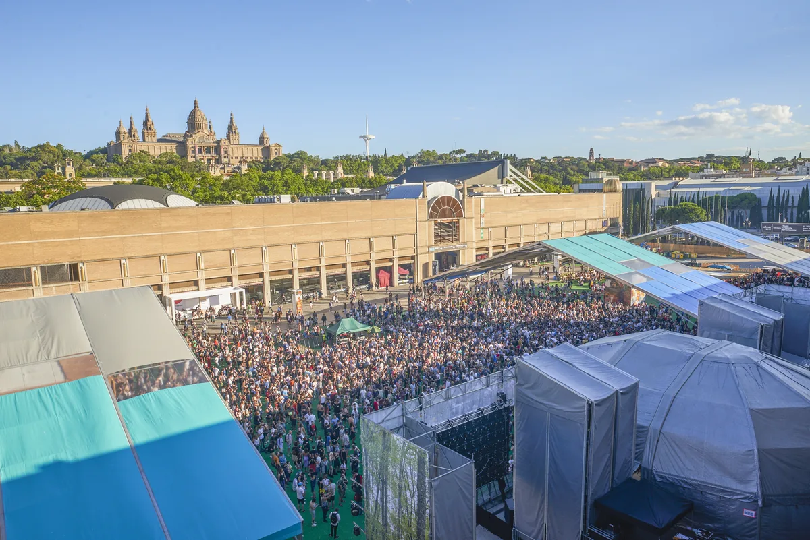
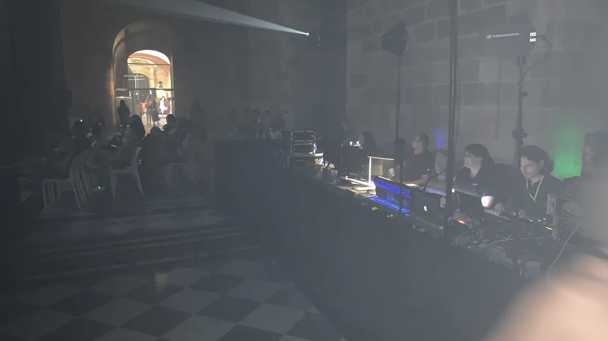
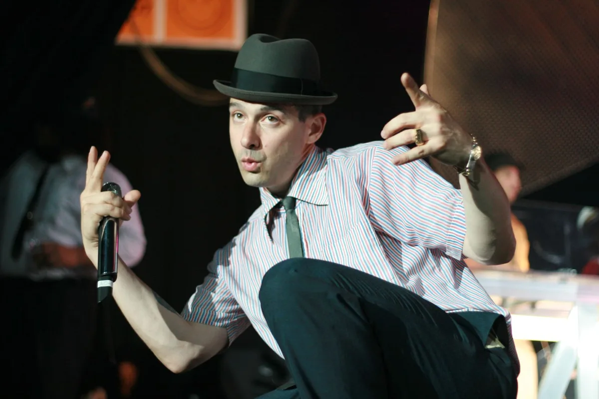
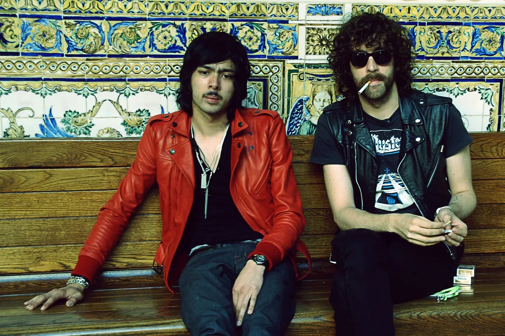
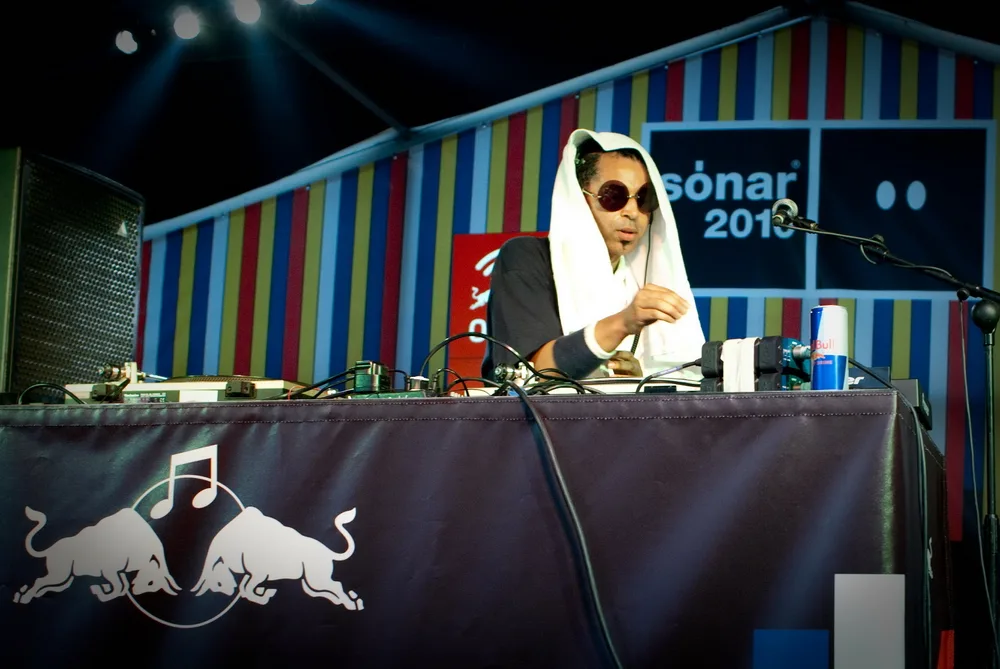

Sónar
Sónar Festival Barcelona
Three days every June in Barcelona since 1994, by day and by night. Where it happens, how big it has grown, who owns it now, and what it sounds like.
A festival of advanced music.
Sónar started in 1994 as a small festival of what its founders called advanced music, split between a culture centre by day and a club by night. Thirty-three editions later it fills the trade-fair halls on the edge of Barcelona, has put its name to more than a hundred festivals around the world, and lends it to a whole week of parties across the city.
What is the Sonar festival to someone who has never been? This guide covers when and where it happens, how big it has become, how it started and who owns it now, and what it has been known for on stage. Then it answers the question this site is here for: what does Sónar actually sound like, and where can you hear it from home?
Sónar 2027: dates.
Sónar 2027 is on Thursday 17, Friday 18 and Saturday 19 June 2027, in Barcelona, according to the festival's own site. The line-up and the site plan had not been published when this guide was written in September 2026; the official site at sonar.es carries both once they are announced.
The dates follow the usual pattern: a Thursday, Friday and Saturday in the middle of June, 12 to 14 June in 2025 and 18 to 20 June in 2026. This guide is updated when the next year's dates are announced.
Where is Sónar festival in Barcelona?
For most of its history the answer was two places. Since 2001 Sónar by Night has been held at Fira Gran Via, the newer site of Barcelona's trade fair, in L'Hospitalet de Llobregat, the city next door, where the halls hold tens of thousands of people and the music runs until morning. From 2013 Sónar by Day was held at Fira Montjuïc, the older fairground at Plaça d'Espanya, below the Palau Nacional on Montjuïc hill.

In 2026 that split ended and the Sónar festival location became a single one. All of Sónar by Day and Sónar by Night moved to Fira Gran Via, with six stages running at the same time for the first time. Sónar+D, the conference, went the other way, to Llotja de Mar, the historic exchange building by the port. Sónar is not a camping festival: people stay in the city and travel in, mostly by metro.
Sónar by Day and Sónar by Night
The two halves were always meant to feel different. Sónar by Day was the discovery end, with new artists, installations and talks, and open-air stages like SonarVillage in the afternoon sun. Sónar by Night was the club end, with the biggest names on the bill in rooms the size of aircraft hangars.
The stage names carry across both. SonarVillage, SonarClub, SonarCar, SonarHall, SonarPark and SonarLab were the six stages of 2026, and SonarClub is the biggest of them. Since the move to one site, the day and night programmes run into each other; the 2026 edition had fourteen hours of music on the Saturday.
Sónar+D
Sónar+D is the festival's conference and exhibition on creativity, innovation and technology. It took that name in 2013, when Sónar by Day moved to Fira Montjuïc, and in 2025 it had more than 580 speakers and exhibitors. In 2026 it moved to Llotja de Mar, with about 200 speakers, more than 4,000 visitors and artificial intelligence as its main subject.

A Sónar+D ticket is separate from the music. In 2026 it cost €15 for a day and €25 for two.
How big is Sónar?
Sónar drew about 150,000 people in 2026, as reported after the event. The 2025 figure was 161,000, but that total also counted 42,000 people at Sónar Week events around the city. The festival itself had 52,500 at Sónar by Day and 66,500 at Sónar by Night that year.
It began at about 6,000. The figures below come from Wikipedia for the early years and from reporting on each edition since; treat the recent totals as the festival's own counts.
| Year | Night venue | Attendance |
|---|---|---|
| 1994 | Apolo | About 6,000 |
| 1995 | Poble Espanyol | About 12,000 |
| 1996 | Poble Espanyol | 18,000 |
| 1997 | Mar Bella pavilion | 28,000 |
| 1998 | Mar Bella pavilion | 38,000 |
| 1999 | Mar Bella pavilion | 43,000 |
| 2000 | Mar Bella pavilion | More than 53,000 |
| 2013 | Fira Gran Via | 121,000 |
| 2017 | Fira Gran Via | 123,000 |
| 2018 | Fira Gran Via | 126,000, from 119 countries |
| 2025 | Fira Gran Via | 161,000, including 42,000 at Sónar Week events |
| 2026 | Fira Gran Via, day and night | About 150,000 |
The steps follow the venues. Moving the night programme to the Mar Bella sports pavilion in 1997 tripled its capacity, and Fira Gran Via, from 2001, gave it room for the six-figure crowds it has drawn in every reported year since 2013. The 2018 edition, the 25th, drew 126,000 people from 119 countries.
A short history of Sónar, and who owns it.
Sónar was founded in 1994 by three Barcelona friends, Ricard Robles, Enric Palau and Sergio Caballero, as the Festival of Advanced Music and Multimedia Art. The first edition, in June 1994, was split the way the festival still is: days at the CCCB, the city's centre for contemporary culture, and nights at Apolo, a club. About 6,000 people came, and Laurent Garnier played. He has been back many times since; for the 25th edition, in 2018, he played a retrospective show called Laurent plays Garnier.
The night programme kept outgrowing its rooms: Poble Espanyol in 1995 and 1996, the Mar Bella sports pavilion in 1997, and Fira Gran Via from 2001. By the middle of the 2000s the bill reached well past electronic music. LCD Soundsystem played in 2005 and the Beastie Boys in 2007.

Who owns Sónar? The founders ran it through their company, Advanced Music, until 2018, when they sold a majority stake to Superstruct Entertainment, a festival group. In 2024 Superstruct was bought by KKR, the American investment firm. That sale caught up with Sónar the next summer: more than 50 artists withdrew from the 2025 edition in protest at KKR's reported investments linked to Israel. In October 2025 the three founders stepped away from the festival after more than thirty years. François Jozic, a co-founder of the Brunch Electronik parties and chief executive of Superstruct's Centris Group, which also runs OFFSónar, became Sónar's chief executive.
The 2026 edition was the first under the new management, and the first on a single site.
Sónar around the world
Sónar has travelled further than almost any festival. By its own count it has held more than 100 editions around the world, in Europe, Asia and Latin America. Past editions include Reykjavik, Hong Kong, Bogotá, Buenos Aires and Santiago de Chile. Sónar Istanbul and Sónar Hong Kong both began in 2017, Sónar Lisbon, or Sónar Lisboa, in April 2022, and Sónar Tokyo was set for the end of June 2026.
The most watched Sónar set we found on an official channel is not from Barcelona at all. It is Paul Kalkbrenner at Sónar Lisboa in 2024, filmed by DJ Mag, which had passed 1.9 million views by September 2026.
The editions abroad have their own dates and bills. The rest of this guide is about Barcelona.
The music
What Sónar is known for: the music.
Sónar's idea, from its first name, was advanced music: electronic music treated as an art worth a festival, with room for the experimental beside the dance floor. The list of past performers shows how wide that became: Björk in 2002, the Chemical Brothers in 2005 and 2015, Kraftwerk with a 3D show in 2013, and Thom Yorke, Jean-Michel Jarre, Duran Duran, Gorillaz and Skrillex among many others.
The night has always belonged to dance music. Laurent Garnier's house and techno run through three decades of it, and in 2024 Richie Hawtin brought DEX EFX X0X, a show about the origins of techno and club culture, to SonarClub, its first outing in Europe. Justice, the French duo, played in 2008.

Other people have run stages inside the festival and filmed them. Resident Advisor had one, and its film of Kerri Chandler, the New Jersey house DJ, playing it came out in 2016.
Red Bull Music Academy, which gave young artists a platform, was at Sónar for years and marked its 20th anniversary there in 2018. Detroit came too: Moodymann played in 2010.

The 2026 bill, the first under the new owners, kept the same spread: The Prodigy, Skepta, Charlotte de Witte, Cabaret Voltaire, and Speedy J's STOOR Live, a 360-degree improvised techno show on the SonarCar stage.
OFFSónar and Sónar Week.
Sónar is not the only thing happening in Barcelona that week. OFFSónar, also written Off Sónar, is a separate festival at Poble Espanyol on Montjuïc, over four days and four stages the same week, and it drew more than 30,000 people in 2026. Around both runs Sónar Week, a spread of parties across the city, many of them billed as Off Sónar by their promoters. In 2025, 42,000 people went to Sónar Week events, on the festival's own count.
OFFSónar is no longer an outsider. It is run by Centris Group, the Superstruct company whose chief executive now runs Sónar too.
The Off Sónar parties are where much of the week's club music gets filmed. Drumcode's produced one of the most watched: Adam Beyer b2b Enrico Sangiuliano, filmed by DJ Mag and published in 2019, past a million views.
Our own catalogue shows the same pattern. Of the 62,877 DJ sets behind the Selector, 13 mention Sónar and none is from the festival itself. Four are Beatport's streams from Brunch Electronik and Circoloco at OFFSónar, led by Miss Monique in 2023, at 788,000 views.
Essential listening.
Since 2024 ARTE, the Franco-German broadcaster, has filmed full shows at Sónar and put them on its ARTE Concert channel. The two below come from the same Friday night on SonarClub in 2024: Ben Böhmer live, the most watched of ARTE's Sónar Barcelona films at about 215,000 views in September 2026, and Richie Hawtin's DEX EFX X0X.
For the other festivals in this series, read our guides to Tomorrowland, EDC Las Vegas and Creamfields. And the Selector plays one full DJ set at random from 62,877, if you would rather not choose.
Sónar FAQ.
What is the Sonar Festival?
A festival of electronic music, creativity and technology held in Barcelona every June since 1994, in two halves, Sónar by Day and Sónar by Night, with the Sónar+D conference alongside. About 150,000 people went in 2026.
When is Sónar 2027?
On 17, 18 and 19 June 2027, Thursday to Saturday, in Barcelona, according to the official site. The line-up had not been announced in September 2026.
Is the Sonar Festival worth it?
It suits people who want new and experimental electronic music beside big names, and a city to explore between sets: the programme runs from the afternoon into club sets that last until morning, with a technology conference alongside. It is not a camping festival, and it is not built around a single genre.
How much do Sonar Barcelona tickets cost?
For 2026 the official site sold a Thursday ticket for €49 and a Friday or Saturday ticket for €99, with VIP day tickets from €95. The full-access SonarPass sold out; the VIP version cost €319. A day at Sónar+D cost €15. Prices for 2027 had not been published in September 2026.
When is OFFSónar?
The same week as Sónar, in June. In 2026 it ran over four days at Poble Espanyol. Its organisers say the 2027 programme will be announced after the summer, and no 2027 dates had been published in September 2026.
Sources.
- Wikipedia: Sónar
- Sónar: official site (2027 dates)
- Sónar: What is Sónar
- Sónar: the full Sónar 2026 line-up, stage by stage
- Sónar: tickets
- Sónar: relive five of the biggest shows from Friday at Sónar by Night with ARTE
- DJ Mag: Sónar founders step away from festival amid Superstruct/KKR ownership controversy
- Mixmag Italy: Sónar 2025 draws 161,000 attendees and announces major format change for 2026
- We Rave You: Sónar 2026 recap
- Deep House Amsterdam: Report, 25 Years Of Sonar
- Resident Advisor: Sónar heads to Istanbul, Hong Kong in 2017
- The Quietus: Sónar to stage inaugural Lisbon event in 2022
- OFFSónar: official site
Continue reading
Read next.
 A14Guide / Tomorrowland / ~10 min
A14Guide / Tomorrowland / ~10 minTomorrowland Festival: Where It Is, How Big, and the Music
A park in Boom, Belgium, that most of the world knows through a livestream: where Tomorrowland happens, how big it is, who owns it, and what plays off the Mainstage.
Read article → A15Guide / EDC Las Vegas / ~11 min
A15Guide / EDC Las Vegas / ~11 minEDC Las Vegas: What It Is, How Big, and the Music
Electric Daisy Carnival at the Las Vegas Motor Speedway: where EDC happens, how half a million people a year grew out of a field in Chino, and what plays past kineticFIELD.
Read article → A16Guide / Creamfields / ~11 min
A16Guide / Creamfields / ~11 minCreamfields Festival: Where It Is, How It Grew, the Music
Four days on the Daresbury estate every August bank holiday: where Creamfields happens, how a Liverpool house night grew into it, who owns it, and what plays beyond the Arc Stage.
Read article → A17Guide / Parookaville / ~10 min
A17Guide / Parookaville / ~10 minParookaville Festival: Where It Is, Who Runs It, the Music
A festival staged as a city on an old RAF airbase at Weeze: where Parookaville happens, how three friends built it, how many people go, who runs it, and what plays there.
Read article →